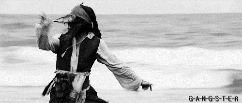
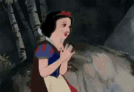

|  |  |
Not knowing what to think or how to feel, Lola turned around and ran as fast as she possibly could only to discover the man who vanished standing right in front of her. The blood drained form her face as she let out a blood curdling scream. The man, as if on que, vanishes into thin air yet again. Immediately she raced back in a panic wishing she had stayed within the safety of her home. Desperately she tried to find a logical answer for what she had just experienced.
Lola was so consumed in thought that she neglected to watch where she was going. Running at full force, she slammed into an unsuspecting person and they both fell to the ground. Like a knee jerk reaction, Lola became defensive and immediately began to wrestle the person who toppled over on her as she yelled “Get away from me!”
The other person managed to overpower her and pinned her flailing arms and legs to the ground. In an attempt to gain her attention, the person thunderously hollered “Lola!!! Stop it!!” For a moment she calmed down and realized the person she was grappling with was her close friend Edward. They helped each other up as she explained to him why she was in such a panic, before she could finish, he motioned for them to continue running becuase he saw the disappearing figure headed towards them. Together they made it back safely to her house. Edward and Lola bonded over the tragic experience as they drank coffee and stayed up talking. The fear they shared kept them up until the sun peaked over the mountains spreading the sense of security with every ray of sunshine.